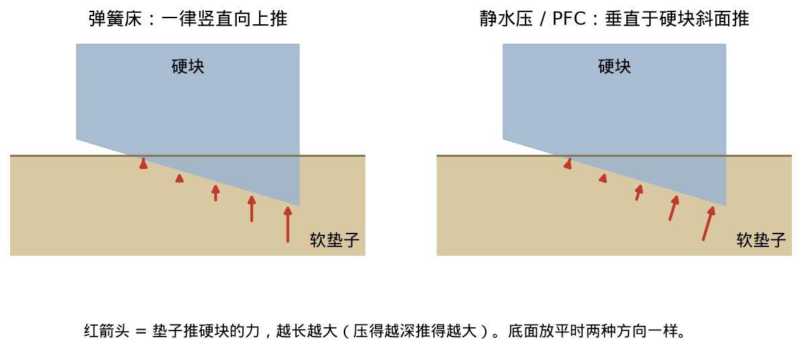

文献：Hydroelastic + Hertz
Elandt et al. 2019：A pressure field model for fast, robust approximation of net contact force and moment between nominally rigid objects
1. 要解决什么问题
机器人仿真里物体大多当刚体，难点是接触力怎么算。现有方法分处两端：
- 点接触（每对物体只在一两个点上施力）：快，但力不光滑，还漏掉和接触面积有关的力矩，比如滚动阻力。
- FEM（有限元：把物体切成小四面体，逐块算形变）：准，但慢几个数量级。
作者要的模型：力随物体位置连续变化（学习和优化要用梯度）；不解互补问题（「不接触就没力、有力就必须贴紧」这种二选一条件，难解）；任意形状可用；网格很粗也能用。
2. 核心 idea
给每个物体内部预先放一个「虚拟压力」场。两物体按原形状直接重叠，在两边压力相等的那张面上把压力加起来，就是接触力。
(a) 压力场
\[p_0 = E\,\epsilon\]
- \(p_0\)：物体内部某点的虚拟压力（Pa），固定在物体上，随物体一起动。
- \(E\)：杨氏模量（材料多硬，Pa）。
- \(\epsilon\)：穿透程度，无单位；表面为 0，最深处（中轴：物体内部的「骨架」）为 1。
越往里越大、越硬越大，像一块外软内硬的果冻。
(b) 接触面 = 等压面
接触面 \(\mathcal{S}^{\cap}\) 是重叠区里 \(p_{0_A}=p_{0_B}\)（A、B 两物体压力相等）的点。由 \(E_A\epsilon_A=E_B\epsilon_B\) 可知：越软的一方要被压得越深才能顶住同样的压力，所以接触面陷进软的那一边；B 是刚体时接触面就贴在 B 的表面上。
(c) 合力与合力矩
\[f = \int \begin{bmatrix} R \times T \\ T \end{bmatrix} d\mathcal{S}^{\cap},\qquad T = p_0\,\hat n\]
- \(f\)：合力矩（上半）和合力（下半）。
- \(R\)：接触面上一点的位置；\(R\times T\) 是这点的力产生的力矩。
- \(T\)：该点单位面积上的力（Pa）。
- \(\hat n\)：接触面单位法向，从 B 指向 A。
压得越深 → 压力越大、接触面也越大 → 合力越大，所以越压越硬。接触面变大是因为它躺在重叠区里：半径 \(R\) 的球压进平面 \(d\) 深，重叠部分是一片「球冠」，底面圆半径 \(a\approx\sqrt{2Rd}\)，\(d\) 越大切口越大。平面压平面时接触面从一开始就是整个面，不再变大，力只和深度成正比。
(d) 势能：模型是保守的
\[U_A = \int_{V_A^{\cap}} p_{0_A}\,dV\]
- \(U_A\)：A 的接触势能（J）；总能量 \(U_A+U_B\)。
- \(V_A^{\cap}\)：A 被对方挤占的那块体积；\(dV\) 体积微元。
势能就是「把压力场挤开要做的功」，力是势能对位姿的负导数（顺着力的方向走，势能下降）。拿球砸地打比方：压进去时，推力和运动方向相反，球的动能被存进势能，像压缩弹簧；弹开时，同一个力把这份能量原数还给球。分开后势能回到 0，前后两段功正好抵消，总功为 0，球以原速弹回，没有能量损失。真实碰撞会损失能量，所以论文另外加了一项随压入速度变化的阻尼压力，专门耗掉能量。
(e) 和别的模型
- 静水压（浮力）是它的特例：船浮在水上，水是软的一方，表面是平的（水面），压力随深度线性增加；船是刚体。PFC 取「一方平面 + 压力随深度线性增加 + 另一方刚体」时，算出的就是浮力。
- 弹簧床（elastic foundation）：把软层看成一排竖直的独立小弹簧，压多深推多大、一律竖直向上。表面平缓时和 PFC 结果差不多；表面很斜时它不保守（能量会凭空增减），PFC 任何角度都保守。下图是论文图 3 的场景：一层水平软垫子，一个底面倾斜的硬块斜着压进去，两个模型只差在推的方向。

什么叫「保守」，弹簧床为什么斜了就不保守
保守：先有一个只看物体位置的能量，力从它算出来（指向能量下降最快的方向）。这样物体怎么动、回到原位时能量都不变。弹簧床的力是人直接规定的「竖直向上」，不是从能量算出来的：表面平时两者恰好一致，表面斜了就对不上。论文还指出弹簧头没粘在物体的固定点上，物体一滑就换了一根弹簧顶着它，也找不到一个只看位置的能量。PFC 的力始终从势能 \(\int p_0\,dV\) 算出来，所以任何角度都保守。
- 重叠体积法：力 = 常数 × 重叠体积。论文批评的那几篇方法把整片接触简化成「一个平均法向 + 作用在重叠区中心的一个力」，这是它们的设计选择，用体积本身并不强制这样做。这种简化在非凸形状上会出问题，例如「销插进孔」：一根圆柱插进孔里，同时碰到左壁和右壁。两块重叠区法向一个朝左、一个朝右，「平均法向」可能接近零、方向定不了；只剩一个总力，看不出两边各挤多大；销歪着插时力矩也算错。PFC 其实就是「加权的重叠体积」（势能 \(\int p_0\,dV\)，压力处处相等时就是常数 × 体积），但它把力逐点分到接触面上，每点用自己的法向，没有这些问题。
- 曲面都很平缓时，这三种模型结果差不多，都是 PFC 的特例。
- 点接触模型的力会跳变；PFC 的力随几何连续变化。
6. 和我们（Neural-IPC）的区别
我们的碰撞能量：
\[U_c(z) = \min_w \Pi(\Phi z + \Psi w) - \Pi(\Phi z)\]
- \(z\)：粗自由度（刚体、仿射或几个模态）。
- \(\Phi z\)：粗状态给出的网格位移；\(\Psi w\)：粗状态表达不了的局部形变，\(w\) 是它的系数。
- \(\Pi\)：精细模型的势能；\(\min_w\) 表示让局部形变自己调整到能量最低（无穿透）的状态。
意思是：真实物体靠局部形变做到无穿透要多存的能量，减去粗状态已经存的能量。
| 维度 | PFC | 我们 |
|---|
| 碰撞能量 | 人为设计的压力场在重叠体积上的积分，只依赖 \(E\) 和几何 | \(U_c\)：从精细 IPC+FEM 的无穿透解得到，由神经网络学 |
| 重叠 | 重叠就是物理机制，力由重叠产生 | 重叠只是粗表示做不出薄弹性层的副作用，是网络的输入 |
| 局部形变 | 不求解 | 真解里求出，能量差交给网络 |
| 准度 | 不追求精确，只和二维 FEM 比过 | 以 IPC（Incremental Potential Contact：用随距离趋零而变无穷大的能量保证不穿透的接触方法）+FEM 为训练标签；先在 Hertz 等简单情况检查 |
Masterjohn et al. 2022：Velocity Level Approximation of Pressure Field Contact Patches
1. 要解决什么问题
压力场接触（PFC，Drake（丰田研究院开源的机器人仿真库）里叫 hydroelastic contact）：每个物体内部放一个虚拟压力场，表面为 0、越往里越大，最深处的值 \(E_h\)（hydroelastic modulus，用户给定，相当于「硬度」）。两物体按原形状直接重叠，两边压力相等的那张面就是接触面，压力在面上积分得到接触力。它比点接触多给出了接触片的形状和压力分布。
问题在时间积分：原始 PFC 写在加速度层面，要用自适应步长积分（边估误差边调步长），有时步长要缩得很小。而 ODE、MuJoCo、Drake 等主流机器人仿真引擎都写在速度层面：步长固定，每步把下一步速度和接触冲量一起解。原始 PFC 塞不进这类求解器。
本文：把 PFC 近似成速度层面的形式，接进现有求解器，跑到实时。
2. 核心 idea
把每块接触多边形换成一个等效的柔性点接触（一根带阻尼的弹簧），弹簧硬度 \(k=gA_0\)，假想穿透 \(\phi_0=-p_{c,0}/g\)。任何支持柔性点接触的求解器都能直接用。
起点：柔性点接触
\[f_n = (-k\phi - d\,v_n)_+\]
- \(f_n\)：法向接触力（N）。
- \(\phi\)：两物体的有符号距离（m），重叠时为负。
- \(v_n\)：法向相对速度（m/s），\(>0\) 表示在分开。
- \(k\)：刚度（N/m）；\(d\)：阻尼系数。
- \((\cdot)_+=\max(\cdot,0)\)：力只推不拉。
压得越深、靠拢得越快 → 力越大。
代入 \(\phi=\phi_0+\delta t\,v_n\)（\(\delta t\) 时间步长，下标 0 表示上一步），力就成了下一步速度 \(v_n\) 的函数，和动量方程一起隐式求解，硬材料也稳。
压力多边形 → 点接触
接触多边形是平面的，压力在上面是线性的，所以合力精确等于
\[f_{n,e} = A\,p_c\]
- \(f_{n,e}\)：这块多边形的法向合力。
- \(A\)：多边形面积；\(p_c\)：多边形质心处的压力（Pa）。
线性函数的平均值就是质心处的值，所以一个点就积准。
质心压力往前推一步：
\[p_c = \left(p_{c,0} - \delta t\, g\, v_n\right)_+\]
- \(p_{c,0}\)：上一步质心压力。
- \(g\)：等效压力梯度（Pa/m），即两物体每多分开 1 m 压力掉多少。
分开得越快、\(g\) 越大 → 压力掉得越快；取正部因为分开后不能有负压。
代回去、面积冻结在上一步（\(A_0\)），形式和点接触一模一样：
\[f_{n,e} = (-k\phi)_+,\qquad k = g A_{0},\qquad \phi_{0} = -\frac{p_{c,0}}{g}\]
- \(k=gA_0\)：多边形越大、压力梯度越陡 → 等效弹簧越硬。
- \(\phi_0\)：由上一步压力反推出来的「假想穿透」，上一步压力越大 → 假想穿透越深。
阻尼照点接触的方式加上。因为 \(k\)、\(\phi_0\) 都由面积和压力梯度决定，步长趋于 0 时这个近似回到原来的连续模型；在质心随便放个弹簧做不到这一点。
等效梯度 \(g\) 怎么来
在接触面附近，把两物体的压力沿法向看成直线，斜率分别为 \(g_A\)、\(g_B\)（压力沿法向往里涨多快）。压力场跟着物体走，接触面上两边始终相等，求导得
\[\frac{dp_e}{dt} = -\frac{g_A g_B}{g_A + g_B}\, v_n\]
所以 \(g=\dfrac{g_Ag_B}{g_A+g_B}\)，和两根弹簧串联同形：软的一侧说了算。
6. 和我们（Neural-IPC）的区别
| 维度 | 本文 | 我们 |
|---|
| 能量还是力 | 只规定每块多边形的力，没有势能 | 学一个碰撞能量，力由能量求导 |
| 力 / 能量从哪来 | 人为设计的压力场 + 原形状的重叠量 | 真实物体靠局部形变做到无穿透时多存的弹性能，来自精细 IPC+FEM（IPC：用随距离趋零而变无穷大的能量保证不穿透；FEM：把物体切成小四面体逐块算形变） |
| 局部形变 | 没有形变状态 | 粗自由度之外的局部形变由碰撞能量项代为表达 |
| 刚度来源 | 用户给定 \(E_h\) | 从训练数据学 |
| 准备工作 | 每个物体要一个压力场，非凸形状怎么生成仍是开放问题 | 训练一个覆盖多种形状的网络 |
Castro et al. 2023（SAP）：An Unconstrained Convex Formulation of Compliant Contact
1. 要解决什么问题
仿真每一步要同时解出下一步速度和接触冲量（一步内接触力的累积）。传统写法是互补问题（NCP/LCP：「不接触就没力、有力就必须贴紧」这类二选一条件），一般是 NP-hard，又慢又不稳。
本文：把柔性接触写成一个只含速度、没有约束、强凸（碗形、只有一个最低点）的最小化问题，用牛顿法类求解器 SAP（Semi-Analytic Primal）又稳又快地解。
2. 核心 idea
（1）法向力律：允许少量嵌入的「硬弹簧 + 阻尼」
\[\gamma_n/\delta t = (-k\phi - \tau_d \, k \, v_n)_+\]
- \(\gamma_n\)：一步内的法向冲量（N·s），除以步长 \(\delta t\)（s）就是力。
- \(\phi\)：两物体有符号距离（m），嵌入时为负。
- \(v_n\)：法向相对速度（m/s），\(<0\) 表示在靠近。
- \(k\)：接触刚度（N/m），用户给定。
- \(\tau_d\)：耗散时间尺度（s），越大阻尼越强。
- \((x)_+=\max(0,x)\)：只推不拉。
嵌入越深 → 弹簧推得越狠；靠近越快 → 阻尼顶得越狠。力和嵌入深度成正比（线性）。
（2）凸化：把约束解析消掉
原问题：
\[\min_{\mathbf v,\boldsymbol\sigma}\ \tfrac12\|\mathbf v-\mathbf v^*\|_A^2+\tfrac12\|\boldsymbol\sigma\|_R^2\quad \text{s.t.}\ \mathbf J\mathbf v-\hat{\mathbf v}_c+\mathbf R\boldsymbol\sigma\in\mathcal F^*\]
- \(\mathbf v\)：所有物体下一步的速度；\(\mathbf v^*\)：没有接触时会走到的速度。
- \(A\)：近似的质量（加刚度）矩阵，\(\|\cdot\|_A\) 是按它加权的距离。
- \(\boldsymbol\sigma\)：最优时就等于接触冲量。
- \(\mathbf R\)：正则化（柔度），越大 → 接触越软。
- \(\mathbf J\)：接触雅可比（把物体速度换算成接触点速度）；\(\hat{\mathbf v}_c\)：接触点的目标速度。
- \(\mathcal F^*\)：约束允许的集合（只看法向时就是「不往里压」）。
第一项：偏离自由运动越多代价越大；第二项：冲量越大代价越大。
关键一步：给定速度后，最优冲量能直接算出来（投影），代回去就只剩速度：
\[\min_{\mathbf v}\ \ell_p(\mathbf v)=\tfrac12\|\mathbf v-\mathbf v^*\|_A^2+\tfrac12\|P_{\mathcal F}(\mathbf y(\mathbf v))\|_R^2,\qquad \mathbf y=-\mathbf R^{-1}(\mathbf v_c-\hat{\mathbf v}_c)\]
- \(\ell_p\)：要最小化的目标。
- \(P_{\mathcal F}\)：投影到允许的冲量集合 \(\mathcal F\)（法向就是 \(\gamma_n\ge0\)）。
- \(\mathbf v_c=\mathbf J\mathbf v\)：接触点速度。
\(\ell_p\) 强凸、光滑，所以解唯一，牛顿法稳定收敛。
只看法向时，接触项就是 \(\tfrac{1}{2}R_n^{-1}\big((\hat v_n-v_n)_+\big)^2\)：一个只在压入方向起作用的单边二次惩罚，变量是速度。\(R_n\)、\(\hat v_n\) 是法向的柔度和目标分离速度。
（3）参数从物理量来
\[\hat v_n=-\frac{\phi_0}{\delta t+\tau_d},\qquad R_n^{-1}=\delta t\,k(\delta t+\tau_d)\]
上一步嵌入越深 → 目标分离速度越大（要在约 \(\delta t+\tau_d\) 时间内推回去）；\(k\) 越大 → \(R_n\) 越小 → 接触越硬。代回去正好还原（1）的力律。
（4）近刚性：\(k\)太大会病态，改由步长定刚度
把接触看成质量 \(m\) 的弹簧振子，周期 \(T_n=2\pi\sqrt{m/k}\)。当 \(T_n\) 比步长还短，步长根本分辨不了接触的振动，叫近刚性。这时取 \(T_n=\beta\delta t\)、临界阻尼，得到
\[R_n=\max\Big(\tfrac{\beta^2}{4\pi^2}\|\mathbf W_{ii}\|_{\rm rms},\ \tfrac{1}{\delta t k(\delta t+\tau_d)}\Big)\]
- \(\beta\)：接触周期是步长的几倍，全文取 1。
- \(\mathbf W_{ii}\)：Delassus 算子 \(\mathbf J\mathbf M^{-1}\mathbf J^T\) 的第 \(i\) 个对角块，相当于「接触点处的 1/有效质量」；\(\mathbf M\) 质量矩阵；\(\|\cdot\|_{\rm rms}\) 取它的平均大小。
用户给的 \(k\) 越大，第二项越小；一旦比第一项小就被「封底」，刚度不再涨，避免矩阵病态。
代价是一点穿透。物体静止压在地上时：
\[\phi=\frac{\beta^2}{4\pi^2}\,g\,\delta t^2\]
和质量无关，步长越大穿透越大（平方关系）：\(\delta t=10^{-3}\) s 约 \(2.5\times10^{-7}\) m，\(10^{-2}\) s 约 \(2.5\times10^{-5}\) m。
6. 和我们（Neural-IPC）的区别
| 维度 | SAP | 我们 |
|---|
| 碰撞能量 | 没有位置空间的接触势能，目标 \(\ell_p\) 在速度空间；力对嵌入线性 | 碰撞能量 = 物体靠局部形变做到无穿透时多存的弹性能，由神经网络学 |
| 穿透 | 允许嵌入，力由嵌入产生；近刚性时穿透随 \(\delta t^2\) 增长 | 以无穿透的真解为标签 |
| 刚度 | \(k\) 由用户给，和材料、几何没有关系 | 随材料和几何变化，从数据学 |
| 参考解 | 只比求解器残差和一个弹簧圆柱的解析解，没和 FEM/IPC 比 | 精细 IPC（用随距离趋零而变无穷大的能量保证不穿透的接触方法）+FEM |
Hertz 1882：Ueber die Berührung fester elastischer Körper（和 hydro 比时的裁判）
3. 结论公式
等效量：把两个物体合成「一个等效物体压在刚性平面上」。
\[\frac{1}{E^*}=\frac{1-\nu_1^2}{E_1}+\frac{1-\nu_2^2}{E_2},\qquad \frac{1}{R}=\frac{1}{R_1}+\frac{1}{R_2}\]
- \(E_1,\nu_1\)、\(E_2,\nu_2\)：两个物体各自的杨氏模量和泊松比；\(E^*\)：等效模量。两边「软度」相加，像两根弹簧串联。
- \(R_1,R_2\)：两个表面各自的曲率半径；\(R\)：等效半径。平面 \(1/R_2 = 0\)，\(R\) 就是球半径；凹面的 \(R_2\) 取负，\(R\) 变大，两面贴得更「合身」。
接触半径
\[a=\sqrt{R\,\delta}\]
- \(a\) 接触斑半径，\(R\) 等效半径，\(\delta\) 压深。
- 压深变 4 倍，\(a\) 只变 2 倍。这个圆比拿平面直接切球得到的 \(\sqrt{2R\delta}\) 小，因为接触圈外的表面也被带着往下陷。
力和压深（Hertz 定律的核心）
\[F=\frac{4}{3}E^*R^{1/2}\delta^{3/2}\]
- \(F\) 压力，\(E^*\) 等效模量，\(R\) 等效半径，\(\delta\) 压深。
- \(E^*\) 越大 → \(F\) 越大：材料越硬越难压。\(R\) 越大 → \(F\) 越大：接触斑宽，顶着的材料多。
- \(F\) 比线性弹簧涨得快：刚度 \(dF/d\delta = 2E^*a\) 随接触面一起变大，越压越硬。
压力分布
\[p(r)=p_0\sqrt{1-\frac{r^2}{a^2}},\qquad p_0=\frac{3F}{2\pi a^2}\]
- \(p(r)\) 距中心 \(r\) 处的压强（Pa），\(p_0\) 中心峰值压强，\(a\) 接触斑半径，\(F\) 总压力。
- 形状是半椭球：中心最大，边缘 \(r=a\) 平滑降到 0。峰值是平均压力 \(F/(\pi a^2)\) 的 1.5 倍。
弹性能
\[U=\int_0^\delta F\,d\delta'=\frac{8}{15}E^*R^{1/2}\delta^{5/2}=\frac{2}{5}F\delta\]
- \(U\) 两个物体储存的弹性应变能（J），\(\delta'\) 积分变量（从 0 压到 \(\delta\)）。
- 能量是力对压深的积分，指数比力多 1。
5. 和我们（Neural-IPC）的关系
- 项目笔记要求：先从「两个球相撞」这种有解析解的简单 case 验证代码；和 IPC 不 match 时，从 Hertz 入手。
- 为什么当裁判：IPC（Incremental Potential Contact，用距离势垒保证物体永不穿透的接触算法）、hydroelastic（压力场软接触模型，简称 hydro）和我们的 Neural IPC 都是数值近似，互相验证说不清谁错。Hertz 不依赖任何一方的代码，是独立第三方。
- 怎么比：
- 只在前提成立的区间比：同时比 \(F\)–\(\delta\)（log–log 图上应是斜率 3/2 的直线）、\(a\)、\(p_0\)。
- 用 FEM 软体：Genesis（我们用的仿真框架）的刚体进入 libuipc（Genesis 底层的 GPU 版 IPC 库）后是 ABD 物体（只允许整体仿射变换的近刚体），几乎不变形。\(E\)、\(\nu\) 和算 \(E^*\) 的要一致；关掉摩擦。
- 先让 FEM + IPC 对上 Hertz，确认训练数据没问题，再拿它检验网络。
- 能量要分清：网络学的是接触引起的弹性能。IPC 总能量里还有 barrier 能（距离越近越大的排斥势能），Hertz 的 \(U\) 只对应弹性能，比之前要拆开。
- \(\hat d\) 要够小：\(\hat d\) 是 barrier 开始起作用的距离，两面距离小于它就被往外推。它要远小于 \(\delta\)，否则力里多一段 Hertz 没有的成分；IPC 里两面不真正贴合，「接触斑」只能定义成距离小于 \(\hat d\) 的区域。
文献：神经网络接触模型
Romero et al. 2021：Learning Contact Corrections for Handle-Based Subspace Dynamics
1. 要解决什么问题
- FEM（有限元：把物体切成很多小三角形或四面体，逐块算形变）细节丰富，但慢。
- 子空间方法（subspace：只用少数几个控制量带动整张网格）快，但做不出接触压出来的局部凹坑。
Fig. 1 的 2D 果冻：全 FEM 20 fps（fps：每秒算多少帧）；只用 8 个控制点的线性子空间 420 fps，但细节全丢；本文 140 fps，凹坑细节找回来了。
思路：整体运动在子空间里算，接触压出的局部凹坑由神经网络补上。
2. 核心 idea
handle（把手：子空间的控制量，可以是一个点，也可以是一个带朝向的小坐标架）。网格每个顶点按固定权重跟着各个把手动，这套权重叫 BGBC（一种光滑的插值权重，相当于一张「每个顶点跟每个把手动多少」的表）。
式 1：线性形变 + 局部修正
\[\mathbf{x}(\mathbf{q}) = \mathbf{U}\,\mathbf{q} + \mathbf{F}(\mathbf{q})\,\mathbf{r}(\mathbf{q})\]
- \(\mathbf{x}\)：网格所有顶点的位置。
- \(\mathbf{q}\)：所有把手的自由度（位置、旋转等）。
- \(\mathbf{U}\)：BGBC 权重矩阵；\(\mathbf{U}\mathbf{q}\) 就是只靠把手插值得到的形状。
- \(\mathbf{r}\)：网络学出来的修正位移，写在物体静止时的局部坐标系里。
- \(\mathbf{F}\)：形变梯度（描述每一小块材料被转了多少、拉了多少）。
直观理解：\(\mathbf{r}\) 越大，结果离线性解越远。\(\mathbf{F}\) 把静止姿态下学到的凹坑转到当前姿态，网络不用为每个朝向各学一遍。论文对照：在局部坐标系学修正误差 15%，在全局坐标系学 75%。
式 7：修正拆成内部 + 外部
\[\mathbf{r} = \mathbf{r}_{\text{int}}(\mathbf{q}) + \mathbf{r}_{\text{ext}}(\mathbf{A}(\mathbf{q})^{-1} \mathbf{z})\]
- \(\mathbf{r}_{\text{int}}\)：内部修正，没有接触时线性子空间本身的误差（比如太僵、伸展不够）。
- \(\mathbf{r}_{\text{ext}}\)：外部修正，只管接触压出的额外形变。
- \(\mathbf{z}\)：碰撞体（去压物体的那个东西）的位置、朝向和尺寸。
- \(\mathbf{A}(\mathbf{q})\)：物体当前的整体刚体变换；\(\mathbf{A}^{-1}\mathbf{z}\) 就是「站在物体上看，碰撞体在哪」。
直观理解：碰撞体相对物体的位置一样，压出的坑就一样。拆开后，内部修正不用碰撞体就能训，外部修正只需在物体表面附近采样。
式 4：Jacobian 近似
\[\mathbf{J}\approx \mathbf{U}+\mathbf{F}\,\frac{\partial \mathbf{r}}{\partial \mathbf{q}}\]
- \(\mathbf{J}\)：Jacobian（\(\mathbf{q}\) 变一点，\(\mathbf{x}\) 跟着变多少）。
- \(\partial \mathbf{r}/\partial \mathbf{q}\)：修正位移随把手的变化率，由网络求导得到。
用途：把网格上的力投到把手上，\(\mathbf{f_q} = \mathbf{J}^T \mathbf{f_x}\)（\(\mathbf{f_x}\) 网格顶点上的力，\(\mathbf{f_q}\) 把手感受到的力）。\(\partial \mathbf{r}/\partial \mathbf{q}\) 这项不能丢，丢了形变明显出错。
式 5：每一步解一个最小化问题
\[\mathbf{q} = \arg\min \frac{1}{2h^2} (\mathbf{x} - \mathbf{x}^*)^T \mathbf{M} (\mathbf{x} - \mathbf{x}^*) + V(\mathbf{x})\]
- \(h\)：时间步长（秒）。
- \(\mathbf{x}^*\)：不受力、只靠惯性这一步会走到的位置。
- \(\mathbf{M}\)：质量矩阵（各顶点的质量）。
- \(V\)：势能（材料是 Neo-Hookean，一种常用的大形变橡胶类材料模型）。
- \(\arg\min\)：找使整个式子最小的 \(\mathbf{q}\)。
这是 backward Euler（隐式时间积分，大步长也不炸）的优化写法。直观理解：\(h\) 越小，惯性项越重，解越贴近 \(\mathbf{x}^*\)；\(h\) 越大，越接近只让势能最小的静力平衡。
6. 和我们（Neural-IPC）的区别
| 维度 | 本文 | 我们 |
|---|
| 网络学什么 | 位移修正 \(\mathbf{r}\)；论文没写接触能量或接触力怎么算 | 一个标量碰撞能量：有穿透与无穿透时的能量差 |
| 无穿透 | 没讨论 | 物体靠局部形变达到无穿透：碰撞 → 无穿透 → 局部形变 → 弹性能量 |
| 参考解 | 全 FEM 静力解 | IPC（保证不穿透的接触算法）+ 高精度 FEM |
| 粗自由度 | BGBC 把手 | 刚体 / affine body（可整体线性变形的物体）/ 降阶模型 |
| 训练单位 | 输出绑定该物体网格的 PCA 分量，换物体要重训；外部修正还按碰撞体形状分开训 | 一个模型覆盖多种形状，尽量泛化到没见过的形状 |
| 怎么检验 | 和全 FEM 比 RMSE、峰值力 | 先和 IPC 比；对不上就从 Hertz（两个弹性曲面接触的经典解析解）入手 |
Romero et al. 2022：Contact-Centric Deformation Learning
1. 要解决什么问题
实时（如 VR）模拟软体被硬物压出的高分辨率凹坑。
- 子空间方法（只用少量控制量带动整张网格）快，但凹坑种类太多，表示不出来，结果过度平滑。
- 全空间仿真（每个网格顶点都是自由度）有细节但慢：鸭子例子全空间 2 fps（每秒帧数），子空间 277 fps。
- 前作 Romero 2021 在物体坐标系里学凹坑，要对物体的各种姿态做稠密采样，数据量大。
本文的办法：换到碰撞体（去压物体的那个硬物）的坐标系里学凹坑，叫 contact-centric。
2. 核心 idea
把手（handle：子空间的控制量，例如点、带朝向的小坐标架或骨骼）。网格顶点按固定权重跟着把手动，像角色动画里的蒙皮。
式 1：总形变 = 子空间形变 + 接触凹坑
\[x(\bar{x}) = \tilde{x}(\bar{x}) + u(\bar{x})\]
- \(\bar{x}\)：物体上的某个材料点（在静止形状里的位置）。
- \(x\)：这个点现在的位置。
- \(\tilde{x}\)：只靠把手带动得到的位置，按动力学算。
- \(u\)：接触压出的凹坑位移，按准静态处理（只问「压到这里坑是什么形状」，不管坑怎么振荡）。
式 2、3：在碰撞体坐标系里描述凹坑
\[u(\bar{x}) = \mathbf{T}(\mathbf{z}) \cdot r(\bar{z}), \quad \bar{z} = \mathbf{T}(\mathbf{z})^{-1} \cdot \tilde{x}(\bar{x}), \quad r(\bar{z}) \equiv f(\bar{z}, \mathbf{T}(\mathbf{z})^{-1} \cdot \mathbf{x})\]
- \(\mathbf{z}\)：碰撞体的状态；\(\mathbf{T}(\mathbf{z})\)：碰撞体的刚体变换（位置 + 朝向），\(\mathbf{T}^{-1}\) 把东西变到碰撞体坐标系。
- \(\bar{z}\)：材料点在碰撞体坐标系里的位置。
- \(r\)：碰撞体坐标系里的凹坑位移，再用 \(\mathbf{T}\) 转回世界坐标系得到 \(u\)。
- \(\mathbf{x}\)（粗体）：所有把手的状态；\(\mathbf{T}^{-1}\cdot\mathbf{x}\) 就是「站在碰撞体上看，物体的把手在哪」。
- \(f\)：网络要学的函数。
直观理解：站在碰撞体上看，坑形变化很平滑；极端情况下（刚体在无限大平板上平移）坑形完全不变。函数越平滑，需要的数据越少、网络越小。\(f\) 用 MLP（多层全连接神经网络）学成连续场，任意位置都能查询，也能直接求导算力。
式 4：稀疏化，只看附近的把手
\[r(\bar{z}) \approx f(\bar{z}, \mathbf{W}(\bar{x}) \cdot \mathbf{T}(\mathbf{z})^{-1} \cdot \mathbf{x}), \qquad \mathbf{W}(\bar{x}) = \operatorname{diag}(\mathbf{U}(\bar{x}))\]
- \(\mathbf{U}(\bar{x})\)：这个点跟各把手动的权重。
- \(\mathbf{W}\)：把这些权重排成对角矩阵，乘到把手状态上。
直观理解：某把手对这个点权重越大，它对这里的坑影响越大；权重为 0 的远处把手直接被屏蔽，因为凹坑是局部的。网络不必面对所有把手组合起来的巨大状态空间。
6. 和我们（Neural-IPC）的区别
| 本文 | 我们 |
|---|
| 网络学什么 | 凹坑位移；接触项是人工设计的 SDF 三次方罚函数 | 一个额外的碰撞能量：有穿透与无穿透时的能量差 |
| 无穿透 | 没有保证 | 参考解由 IPC（保证不穿透的接触算法）给出；运行时网络这一项是软约束，允许穿透 |
| 真值 | 全空间仿真 − 子空间；原文没说全空间用什么接触模型 | IPC + 高精度 FEM（有限元：把物体切成小四面体逐块算形变） |
| 训练单位 | 每个网络绑死一个物体加一个碰撞体（输入维度由该物体的把手数决定），换任何一个都要重训 | 一个模型覆盖多种形状，尽量泛化到没见过的形状 |
| 怎么检验 | 和全空间仿真、Romero 2021 比误差 | 先和 IPC 比；对不上就从 Hertz（两个弹性曲面接触的经典解析解）入手 |
一句话：本文学坑的形状，再用普通弹性能和接触势算力；我们学粗自由度缺掉的那部分碰撞能量。
Romero et al. 2023：Learning Contact Deformations with General Collider Descriptors
1. 要解决什么问题
- 降阶模型（reduced model：只用少量「把手」带动整张网格，像角色动画的蒙皮）快，但做不出接触处的局部凹陷，形变「太光滑」。
- 全空间仿真（整张精细四面体网格的每个顶点都是自由度）做得出凹陷，但只有 1 fps（每秒帧数）；本文 9–26 fps。
- 前作 Romero 2021/2022 学出的模型只对训练时那一个碰撞体（去压物体的刚体）有效。
本文目标：在一批碰撞体上训练，运行时换成任意形状的刚性碰撞体也能用。
2. 核心 idea
降阶模型漏掉的细节都是局部的，所以网络只需看「附近一小块碰撞体长什么样」。
形变分解：降阶模型给出位置 \(x(\bar{x},q)\)，最终位置是 \(x + r\)。
- \(\bar{x}\)：物体静止形状上的一个点；\(q\)：所有把手的状态；\(x\)：这个点经降阶形变后的位置（网络在这里求修正，叫「兴趣点」）。
- \(r\)：网络要学的局部位移修正。
局部半径 \(d\)：把手之间的平均静止距离。网络只看以 \(x\) 为中心、半径 \(d\) 的小球；比 \(d\) 大的形变交给降阶模型。
碰撞体描述子 = 局部接触坐标系 \(R\) + 局部 SDF 采样 \(\hat{\phi}\)。SDF（有符号距离场：给空间任一点，返回它到碰撞体表面的距离，内外符号相反），记作 \(\phi\)。
式 1：在接触坐标系里预测
\[r(x(\bar{x})) = T R(x) r_{\text{local}}(x)\]
- \(R(x)\)：兴趣点处的局部接触坐标系（一根法向 + 两根切向组成的旋转矩阵）。
- \(r_{\text{local}}\)：网络在这个局部坐标系里预测的位移。
- \(T\)：碰撞体整体变换的旋转部分，把结果转回世界坐标。
直观理解：同样一块局部形状，不管碰撞体整体是什么、朝哪，预测的坑都一样，所以能换碰撞体。
式 2、3：法向 = 平滑后的 SDF 梯度
\[\nabla_B \phi(x) = \sum_{i=1}^3 \frac{\phi(T^{-1}(x) + b_i) - \phi(T^{-1}(x) - b_i)}{2 \|b_i\|^2} b_i,\qquad
\tilde{\nabla}\phi(x) = \frac{1}{N} \sum_{j=1}^{N} \nabla_{B_j}\phi(x)\]
- \(b_i\)：三根互相垂直的小步长向量，\(B\) 是这三根向量组成的一组；沿每根向量前后各取一次 SDF 做差，就是中心差分求梯度。
- \(T^{-1}(x)\)：把点转到碰撞体自己的坐标系。
- \(N\)：随机取的组数；每组方向随机、长度约为 \(d\)。平均后归一化得到法向 \(n\)。
直观理解：差分步长约为 \(d\)，比 \(d\) 小的凹凸被平均掉，法向更平滑、更好学（带孔碰撞体的原始梯度到处跳）。
切向：训练时随机取，并加一个「一致性 loss」，惩罚不同切向下预测结果不一致；运行时固定一种取法，避免画面闪烁。
式 4：在兴趣点周围撒 65 个探针
\[\hat{\phi} = \lbrace \phi(T^{-1}(x) + R \, d \, w_i) \rbrace\]
- \(w_i\)：单位球内的 65 个固定采样点（64 个积分节点 + 球心），按 \(d\) 放大、按 \(R\) 旋转后放到兴趣点周围。
- \(\hat{\phi}\)：这 65 个点上的 SDF 值，就是网络看到的「局部碰撞体形状」。
直观理解：只用 1 个点时，碰撞体内部的空腔会错误地影响形变；撒满一个球才能看清局部形状。
式 5：网络
\[r_{\text{local}}(x(\bar{x})) = \mathbb{N}\left(\hat{\phi}(x),\; W(\bar{x}) (R(x)^{-1} T^{-1} (q - x))\right)\]
- \(\mathbb{N}\)：神经网络（6 层全连接）。
- \(q - x\)：各把手相对兴趣点的位置，\(R^{-1}T^{-1}\) 把它转进局部接触坐标系。
- \(W(\bar{x})\)：对角权重矩阵，对角线是该点跟各把手动的权重。把手对这个点影响越小，输入信号越弱，远处把手相当于被屏蔽。
6. 和我们（Neural-IPC）的区别
| 维度 | 本文 | 我们 |
|---|
| 网络学什么 | 局部位移修正；能量由仿真器定义 | 一个额外的碰撞能量：有穿透与无穿透时的能量差 |
| 无穿透 | 不保证，有穿插 | 参考解由 IPC（保证不穿透的接触算法）给出 |
| 真值 | 全空间仿真；接触怎么处理原文没写 | IPC + 高精度 FEM（有限元：把物体切成小四面体逐块算形变） |
| 泛化方向 | 每个被压物体训一个网络，泛化的是碰撞体形状 | 一个模型覆盖多种被压物体形状，方向相反 |
| 怎么检验 | 对全空间仿真的相对误差 | 先和 IPC 比；对不上就从 Hertz（两个弹性曲面接触的经典解析解）入手 |
1. 要解决什么问题
学一个神经网络模拟器：给定多个刚体当前的状态，预测下一步它们怎么动、怎么相互碰撞。
已有的网络模拟器（MeshGraphNets、FIGNet、HopNet）都要知道网格的连接关系（哪些点连成边、面），再在点、边、面之间反复传递信息。问题是：只有点云（一堆没有连接关系的点）时用不了；分辨率越高越慢，HopNet 每步 4228.7 ms，FIGNet 336.0 ms。
本文：只输入点云、按物体一级推理，精度持平或更好，比 FIGNet 快 8 倍、比 HopNet 快 101 倍。
2. 核心 idea
自回归（用前两帧预测下一帧，预测结果再喂回去，误差会逐步累积）：
\[\mathbf{x}_{t+1} = f_\theta(\mathbf{x}_{t-1}, \mathbf{x}_t, \Delta t)\]
- \(\mathbf{x}_t\)：第 \(t\) 帧所有点的位置；\(\Delta t\)：时间步长；\(f_\theta\)：网络，\(\theta\) 是它的参数。
术语：
- token：用一个向量代表一个东西。
- attention：每个 token 发出「我要找什么」（query），和其他 token 的「我有什么」（key）比对，越匹配就从对方读走越多内容（value）。
- Transformer：attention 层和 MLP（多层全连接网络）交替堆叠的网络。
(a) 一个物体一个 token
每个物体的点云压成一个向量，物体之间的交互只在这些向量之间算。依据：刚体被撞时整体一起响应，影响不必沿表面一条边一条边地传。计算量从「点数的平方」降到「物体数的平方」。
(b) 每个物体只预测 4 个锚点
刚体只有 6 个自由度（3 平移 + 3 转动），所以每个物体用最远点采样（每次挑离已选点最远的点）选 4 个锚点，网络只预测锚点的加速度。3 个增到 4 个平移更准；8 个时平移反而不如 4 个。
(c) AVP：把接触处的几何告诉锚点
接触时加速度准不准，取决于哪些点正靠近接触处。AVP（锚点-顶点池化）让每个锚点按距离加权收集附近点的特征：
\[\mathbf{u}^{(i,k)} = \frac{\sum_{v} w^{(i,k,v)} \mathbf{f}^{(i,v)}}{\sum_{v} w^{(i,k,v)}}, \quad w^{(i,k,v)} = \exp\left(-\frac{\|\mathbf{x}^{(i,v)} - \mathbf{q}^{(i,k)}\|}{\sigma}\right)\]
- \(i\)：第几个物体；\(k\)：第几个锚点；\(v\)：第几个点。
- \(\mathbf{f}^{(i,v)}\)：点 \(v\) 的特征向量（编码了它离别的物体多近等信息）。
- \(\mathbf{x}^{(i,v)}\)：点的位置；\(\mathbf{q}^{(i,k)}\)：锚点的位置。
- \(w\)：权重；\(\sigma\)：带宽（和网络一起学出来）。
- \(\mathbf{u}^{(i,k)}\)：锚点收集到的局部特征。
直观理解：点离锚点越近，权重越大；\(\sigma\) 越大，锚点「看到」的范围越宽。因为是归一化的加权和，点怎么编号都不影响结果。
(d) Verlet 积分 + Kabsch 投影，保证刚体
Verlet 积分（由前两帧位置和加速度推下一帧位置）：
\[\hat{\mathbf{q}}_{t+1} = \mathbf{a}_t \Delta t^2 + 2\mathbf{q}_t - \mathbf{q}_{t-1}\]
- \(\mathbf{q}_t\)：锚点第 \(t\) 帧的位置；\(\mathbf{a}_t\)：网络预测的锚点加速度；\(\hat{\mathbf{q}}_{t+1}\)：候选的下一帧位置（帽子表示「预测值」）。
直观理解：\(\mathbf{a}=0\) 时就是按上一步速度匀速走，网络只需学「偏离匀速多少」。
Kabsch 对齐：4 个锚点各自预测，彼此距离不一定还满足刚体关系，所以找一个最贴合的刚体变换：
\[\mathbf{H} = \sum_{k} (\mathbf{q}_{\text{ref}}^{(k)} - \bar{\mathbf{q}}_{\text{ref}}) (\hat{\mathbf{q}}_{t+1}^{(k)} - \bar{\hat{\mathbf{q}}})^{\top},\quad \mathbf{U}, \mathbf{\Sigma}, \mathbf{V}^{\top} = \text{SVD}(\mathbf{H})\]
\[\mathbf{R} = \mathbf{V} \operatorname{diag}(1, 1, \det(\mathbf{V}\mathbf{U}^{\top}))\mathbf{U}^{\top}, \quad \mathbf{t} = \bar{\hat{\mathbf{q}}} - \mathbf{R}\,\bar{\mathbf{q}}_{\text{ref}}\]
- \(\mathbf{q}_{\text{ref}}\)：锚点在物体参考姿态下的位置；上横线表示 4 个锚点的平均（重心）。
- \(\mathbf{H}\)：两组锚点去掉重心后的互协方差矩阵（记录两组点的相对朝向）。
- SVD：把矩阵拆成「旋转 × 各方向缩放 × 旋转」，\(\mathbf{U}\)、\(\mathbf{V}\) 是拆出的两个正交矩阵，\(\mathbf{\Sigma}\) 是缩放。
- \(\det\) 那一项：防止得到镜像，保证 \(\mathbf{R}\) 是真旋转。
- \(\mathbf{R}\)：旋转；\(\mathbf{t}\)：平移。
最后整个物体所有点都用同一个 \(\mathbf{R}\)、\(\mathbf{t}\) 移动。旋转不改长度，所以物体内部任意两点距离严格不变，与网络预测准不准无关。
6. 和我们（Neural-IPC）的区别
| 维度 | RigidFormer | 我们 |
|---|
| 网络学什么 | 锚点加速度，整个求解器换成网络 | 保留粗自由度仿真，只补一个额外的碰撞能量项 |
| 碰撞能量 | 没有能量概念 | 有穿透与无穿透时的能量差 |
| 无穿透、局部形变 | 只保证单个物体刚性；物体之间不保证不穿透；没有形变 | 物体靠局部形变达到无穿透 |
| 真值 | MOVi 轨迹 | IPC（保证不穿透的接触算法）+ FEM（有限元：把物体切成小四面体逐块算形变） |
| 力从哪来 | 加速度直接进积分，不经过力 | 力由能量求导 |
| 怎么检验 | 和真值轨迹比位置、朝向误差 | 先和 IPC 比；对不上就从 Hertz（两个弹性曲面接触的经典解析解）入手 |
看代码
supervisor 的 NeuralIPC 仓库（YumengHe/NeuralIPC）
本讲只讲碰撞（法向接触）。
1. 要解决什么问题
「粗自由度物体」只用很少的参数描述：刚体、仿射体（整块只能做线性变形，3D 有 12 个参数），或只保留几个振动模态的物体。真实弹性体被压时，接触区会出现一层很薄的局部变形，两个表面靠它才不互相穿透；粗物体做不出这层变形。
这个 repo 要学一个「凝聚接触势」，专门补上粗表示缺掉的这部分柔顺性。
- IPC（Incremental Potential Contact）：每个时间步把「惯性 + 弹性 + 接触」写成一个总能量求最小值。
- barrier：IPC 里的接触能，两表面距离小于 \(\hat d\)（barrier 起作用的距离）时急剧变大，把表面推开。
这个 repo 的思路：给粗物体换一个 barrier，它从精细的「不穿透真解」里算出来，不是人工设计的 log 函数。
2. 核心公式
\[U_c(z)=\min_w \Pi(\Phi z+\Psi w)-\Pi(\Phi z)\]
- \(z\)：粗自由度，仿真器真正要求解的量（刚体位姿、仿射矩阵等）。
- \(\Phi\)：粗基，把 \(z\) 映射成物体上每个点的位移。\(\Phi z\) 是只用粗表示时物体的形状，接触时会和对方穿插在一起。
- \(\Psi\)：接触区附近的局部修正模态，负责粗基表示不了的那部分变形。
- \(w\)：修正系数；\(\Psi w\) 就是那层薄的局部变形。
- \(\Pi\)：总势能（弹性能 + 重力能）。
- \(\min_w\)：固定粗状态 \(z\)，让薄层在不穿透约束下调到能量最低。这一步叫静态凝聚，前提是薄层松弛得比整体运动快得多。线弹性时它就是刚度矩阵的 Schur 补（把内部自由度消掉，只留表面上的等效刚度），有闭式解；非线性时只能离线求最小值再拟合。
- \(U_c\)：两项之差，即「为了真正不穿透，薄层额外付出的能量」。线弹性和有限应变（粗状态取平均变形梯度）下都能证明它 ≥ 0。
直观规律：
- 粗表示自带的局部柔顺性越多 → \(U_c\) 越小：粗体自己吸收的变形越多，barrier 要补的越少。粗表示不带表面局部模态时，在「光滑球压弹性半空间」里 \(U_c\) 就是 Hertz 解 \(U=\tfrac{8}{15}E^*\sqrt R\,\delta^{5/2}\)（\(E^*\) 等效模量，\(R\) 球半径，\(\delta\) 压入深度）；全部模态都带上时 \(U_c\to 0\)。
- 物体越细长 → 仿射表示下的 barrier 越软：仿射的压缩模态像一根轴向弹簧，刚度 \(k\propto EA/H\)（\(E\) 杨氏模量，\(A\) 截面积，\(H\) 高度），越高越软，分走的变形越多。有限应变下 H = 0.4→0.8→1.6 时软化 7.1→12.2→16.8%。
- 压入深度 δ 越大 → U 越大，约按 \(\delta^{5/2}\)增长；网络学到的指数中位数 2.47。
- 同一基底上的接触 patch（一块独立的接触区）靠得越近 → 能量直接相加高估越多：它们互相预压、一起变软。
- 冲击速度 \(v_0\) 相对弹性波速 \(c\) 越大 → 静态 \(U_c\) 漏掉的能量越多：薄层来不及松弛，一直在振动。
3. 各模块做到哪一步
产生标签的求解器（teacher），三个：
1. BEM（边界元：只离散接触表面，用半空间的解析公式把压力换成位移）+ Signorini 条件（压力 ≥ 0、不穿透、有压力处必须贴合）：主力，和 Hertz 误差 < 0.1%。
2. 有限应变 FEM（有限元：把物体切成小四面体逐块算形变；材料用 Neo-Hookean 超弹性）+ 增广拉格朗日接触（用乘子精确强制不穿透）：非线性情形的参考。
3. libuipc 3D（GPU 版 IPC 库）：刚球压软块、3D 压入数据生成器的雏形。接触用 al-ipc（libuipc 里的增广拉格朗日接触，没有 barrier）。
学习：网络形式一步步演化，每步修上一步的问题。
1. 最初：\(U=\delta^2\cdot\mathrm{softplus}(\mathrm{MLP}(\delta,H))\)。softplus 是恒正的平滑函数，MLP 是全连接网络；结构上保证 U ≥ 0、U(0) = 0。力用自动求导取 \(\partial U/\partial\delta\)，所以力就是能量的梯度，不会凭空生出能量。
2. 「状态进、能量出」：多 patch、倾斜、自接触时 δ 定义不清，输入改为局部形状（16×16 网格采样）+ 位姿。
3. gap footing（当前设计）：先用几何方法算有向间隙 gap，令 δ = max(0, −gap 最小值)，网络只输出两个数 \(c,p\)：\(U=c\,\delta^p\)，\(p = 2+\) softplus 保证接触开始时光滑。分离时伪能量从 0.281 降到精确为 0，力误差 10.7% → 5.7%。
4. 多 patch 耦合图：\(U=\sum\) 节点 \(+\sum\) 边。节点是单个 patch 的能量；边是两个 patch 互相变软带来的负修正，形式 \(-\mathrm{softplus}(NN)\sqrt{U_iU_j}\,(L/r)\)（\(U_i,U_j\) 两个 patch 的能量，\(r\) 两者距离，\(L\) 长度尺度），用 \(1/r\) 体现弹性影响随距离衰减。作者推荐「CNN（卷积神经网络，擅长读图像式的网格数据）读高度场的灵活节点 + 物理边」。
所有 loss 都只拟合能量，没有力项。
验证：用质量加权投影时重力不进 \(U_c\)；动力学中比较瞬时弹性亏量 \(D=E_{el}(u)-E_{el}(\Phi z)\)（\(E_{el}\) 弹性能，\(u\) 完整 FEM 的位移）和 \(U_c\)；Craig–Bampton / CMS（在接触律之外再保留少量振动模态）补回振动。
4. 关键结果
| 结果 | 数字 |
|---|
| libuipc 球压块 | U ~ δ^2.406（Hertz：2.500），前系数是 Hertz 的 1.287 倍 |
| 跨形状（90 个网格各取一块，BEM 半空间，E* = 1） | 光滑：网络 23.5% vs Hertz 28.5%；粗糙：41.2% vs 38.6%（输） |
| 多 patch | 直接相加时 2 / 3 个 patch 高估 27.8% / 54.9%；耦合图降到 6.1% / 6.5% |
| 静态势放进动力学，峰值处 (D−U_c)/U_c | \(v_0/c = 0.015\)：+0.4%；\(v_0/c = 0.3\)：+212%（漏掉的是薄层振动能） |
局限：所有学习结果都只在「刚性压头 + 半空间、E* = 1」上做过；两个可变形体、3D 学习模型、用它跑的简化仿真器都还没做。
5. 对照项目笔记的流程
| 笔记里的步骤 | 状态 | 说明 |
|---|
| IPC + FEM 跑 static 作为 GT，加密网格后结果不变 | 部分 | libuipc 已能跑准静态压入，但用的是 al-ipc，没有 barrier。网格加密时 U/U_Hertz 在 δ = 0.02 处依次 1.312→1.235→1.208，还在变，没收敛。 |
| 从两球相撞这种有解析解的情况开始 | 部分 | 做的是刚球压软块（近似半空间），对照 Hertz。 |
| 记录无穿透形状的弹性能量 | 已有 | 存了变形后的表面和能量。 |
| train 势能差：已有穿透、static、软约束 | 部分 | 标签是准静态能量，loss 只拟合能量；但标签来自 BEM / 有限应变 FEM，没有用 IPC + FEM。 |
| 验证：和 IPC 是否 match | 部分 | 网络还没和 IPC 比过；只拿「刚体 + 拟合出的接触律」和 libuipc 比了质心轨迹，最大压深误差 +3.2% / +12.6%。 |
| 验证：Hertz | 已有 | BEM 与 Hertz 误差 < 0.1%；网络学到的指数 2.47。 |
| 测时间、speed up | 没有 | 加速列为目标，没有实测。 |
| shape 泛化 | 部分 | 90 个网格的局部块上，光滑的赢、粗糙的输；3D 真实网格没测过。 |
| 材料泛化 | 没有 | 全程 E* = 1。 |
| ablation | 已有 | 节点 {解析, CNN} × 边 {通用, 物理} 的 2×2 消融。 |
| demo：100 个兔子、dynamics、实时、对比 GPU IPC | 没有 | 简化仿真器还没写，动力学只有一维杆和点质量。 |
- 「碰撞能量 = 穿透与无穿透的能量差」：一致。\(\Pi(\Phi z)\) 是粗形状穿插、没有薄层时的能量，\(\min_w\Pi(\Phi z+\Psi w)\) 是做出薄层、不穿透后的能量，\(U_c\) 就是两者之差。
- 「按物体训练」（一个模型覆盖多种形状、尽量泛化）：一致。代码是一个网络、把形状当输入、测对没见过形状的泛化。
- 还没接上的一环：学习部分还没用 libuipc 生成的数据，标签全部来自 BEM / 有限应变 FEM。
libuipc 球压块为什么没收敛（10-10 已查清）
两个方向相反的误差部分抵消：\(\hat d = 10^{-3}\) 太大使能量偏大，球面细分 4 次太粗使能量偏小；另有块不够大、网格不够细。\(\hat d\) 外推到 0、球面细分 7 次、块和网格外推后，压深 0.004、0.024 为 0.994、1.005，与 Hertz 一致。细节见实验方案 E0。supervisor 用的 pyuipc 0.0.25 没有新版 libuipc 的材料参数错配问题。
6. 组会可能被问的 3 个问题
Q1：学习用的标签是 IPC 算出来的吗？
不是 IPC。标签来自 BEM 或有限应变 FEM。repo 里另有一份自写的经典 IPC barrier \(-\kappa(d-\hat d)^2\ln(d/\hat d)\)（\(\kappa\) barrier 刚度，\(d\) 两表面距离），只在 2D 轴对称 FEM 上和增广拉格朗日做对比。
Q2：多个接触 patch 为什么不能把能量直接相加？
它们共享同一块基底，会互相预压、一起变软。直接相加时 2 / 3 个 patch 高估 27.8% / 54.9%；耦合图降到 6.1% / 6.5%，接近单 patch 的误差下限 7.7%。
Q3：静态势放进动力学靠得住吗？
慢冲击靠得住（\(v_0/c = 0.015\) 时峰值处只差 0.4%），快冲击不行（\(v_0/c = 0.3\) 时差 212%，漏掉薄层振动能）。补救是 CMS：一维杆保留 20 个模态时恢复系数 e = 0.285，完整 FEM 是 0.281。
Genesis 的 hydroelastic 是怎么实现的
1. 一句话
Genesis 的 hydro = 三篇论文拼起来：
| 层 | 论文 | 管什么 |
|---|
| 接触模型 | Elandt 2019，Pressure Field Contact | 力从哪来：每个物体内部一个「虚拟压力场」 |
| 面片离散 | Masterjohn 2022，Velocity Level Approximation of Pressure Field Contact Patches | 每块接触面怎么变成一根弹簧 |
| 求解器 | Castro 2022，SAP | 所有弹簧和约束怎么一起解 |
Genesis 里的 hydro 就是 SAPCoupler（Genesis 里调用 SAP 求解器的接触模块）的四面体（TET）接触类型；另一种 VERT 类型是每个顶点一根弹簧的点接触，不算 hydro。
打个比方：每个物体内部灌了「看不见的气压」，表面是 0，越往里越大。两个物体一重叠，就在「两边气压相等」的那张面上互相推。这张面切成很多小块，每块打包成一根弹簧，交给 SAP 一起解。
3. Genesis 怎么实现
3.1 压力场：到表面距离 / 最大距离 × 刚度
\[p(v)=\frac{|d(v)|}{\max_v|d|}\;H\]
- \(v\)：四面体网格的顶点；\(d(v)\)：顶点到表面的距离。
- 刚体：每个碰撞几何单独剖分成四面体、单独归一化；\(H\) 是整个 coupler 共用的一个全局刚度（默认 1e8 Pa）。从文件加载的刚体默认换成凸包（误差大时拆成几个凸块），所以 hydro 按凸包或凸块算，不按原网格。
- FEM 物体（有限元软体：切成四面体逐块算形变）：\(H\) 换成每种材料自己的 hydroelastic 模量（默认 1e7），和材料的弹性模量 \(E\) 互不联动。
刚度越大 → 同深度压力越大；几何越大 → 压力梯度越小（约为刚度 / 最大内切球半径），但这不等于越大越软，见第 4 节例子。
刚体的场跟着刚体转；FEM 顶点压力值固定，每步按变形后的四面体重算梯度，所以 FEM 物体真的会变形。
3.2 一块接触面怎么变成一根弹簧（刚体–刚体）
- 两个重叠四面体各自线性插值压力，令两边相等，得到等压平面。
- 两个四面体把平面切成多边形，求面积 \(A\)、形心和形心压力 \(p\)。
- 两侧沿法向的梯度 \(g_0,g_1\) 串联：
\[g=\frac{1}{1/g_0+1/g_1},\qquad k=A\,g,\qquad \phi_0=-\frac{p}{g}\]
逐项对应 Masterjohn 的公式。代码注释管它叫 harmonic average，实际是串联，数值是调和平均的一半。
静止、未进入近刚性时代入 SAP：\(-k\phi_0=A\,g\cdot p/g=A\,p\)，即这块的推力 = 面积 × 形心压力。进入近刚性时力小于 \(A\,p\)，要压得更深才平衡。
3.3 不同接触对各不相同
| 接触对 | 接触面放在哪 | 两侧梯度 |
|---|
| 刚体–刚体 | 等压面 | 两刚体各自梯度，串联 |
| 刚体–地面 | 地面 | 只用刚体梯度（地面无限硬） |
| FEM–地面 | 地面 | 全局 \(H\) 与 FEM 梯度串联（地面有限硬） |
| FEM–FEM | 等压面 | \(k\) 用全局 \(H\)；\(\phi_0\) 用两侧梯度 |
| 刚体–FEM | 刚体表面落在 FEM 里的部分 | 刚体侧用全局 \(H\) 顶替，与 FEM 梯度串联 |
FEM–FEM（包括两个不同软体之间）是近似实现，代码自注「与 Drake 不同」。静止时
\[-k\,\phi_0=A\,p\cdot\frac{H}{g_s}\]
\(g_s\) 是两侧梯度的串联值。只有 \(H=g_s\) 时才回到 \(A\,p\)：全局 \(H\) 越大，软–软接触力越大，哪怕两个软体自己的压力场没变。
同一个 \(H\) 当两种量用：刚体压力场里它是最深点的压力（Pa）；FEM 相关的接触里它被直接当成压力梯度（Pa/m）。
Demo：Genesis + hydroelastic
两条关节链落到盒子上（官方 hydroelastic 测试）
官方检查：通过
- 箱体最终下沉约 8 µm：hydroelastic 依靠微小的相互穿透产生支撑力，视觉上不可见；IPC 则在两表面间始终保持正间隙。
设置：Genesis 官方测试 test_sap_rigid_rigid_hydroelastic_contact，场景和检查条件原样；地上一个 0.5 × 0.5 × 0.2 m 的方盒，两条由球和胶囊（半径 24 mm）连成的链从上方落下；全部接触用 hydroelastic（SAP 求解器，不经过 IPC）；压力场刚度 1e8 Pa，阻尼时间尺度 0.1 s；80 步 = 1.33 s，视频慢放约 3.75 倍；为便于观察接触，仅修改了光照、箱体颜色和相机仰角，物理过程与检查条件不变
实验方案：怎么证明我们「原理上」比 hydroelastic 好
核心思路
hydroelastic（下称 hydro：给物体内部预设一个「压力场」，按重叠深度算接触力的方法）和我们比，要分开证两件事：
- 我们的 label（训练用的标准答案：IPC 接触 + 细网格 FEM 算出的结果。IPC：保证物体不穿透的接触算法；FEM：有限元，把物体切成小四面体逐块算形变）对不对。
- hydro 的公式对不对。
裁判必须和造 label 的流程分开，否则等于先认定自己是对的。推荐：E1、E2 用教科书里的弹性力学解析解（用纸笔推出的精确公式，如 Hertz 球压平面、Boussinesq 平底压头）；E3 小压深用 BEM（边界元：只在物体表面离散来解弹性方程），大压深用另一套三维有限元程序；E4 层极薄的一端用薄层解析近似，其余用一套不会锁死的轴对称有限元（轴对称：物体和压头绕一根竖轴转一圈都一样，只需算一个截面）。对 41 篇相关工作的调查中，只有 Fiber Monte Carlo（一种非神经的接触算法）用静态弹性解析解验证过法向接触，hydro 类 10 篇都没有。
统一规则
- 几何、材料、粗表示（模拟器真正求解的少量自由度，例如把物体当刚体）两边完全相同；只看法向力，摩擦全关。
- label 推荐用原版带 barrier（距离趋近 0 时能量趋于无穷、把物体推开的势能项）的 IPC，只记弹性能（被压物体储存的形变能量）。
- 材料：推荐主实验泊松比 \(\nu=0.3\)（泊松比：压扁时往旁边鼓多少，越接近 0.5 越难压缩，等于 0.5 叫不可压）；E4 另加一个接近不可压的 \(\nu\)，推荐先在 0.45 和 0.49 各跑一遍 Hertz 球压并逐档加密网格，和同一 \(\nu\)、同一块大小下一个不会锁死的独立解比，差出来的才算锁死（锁死：接近不可压时粗网格变得假硬，见 E4），再定用哪个。每个 \(\nu\) 单独训一个网络；把 \(\nu\) 当网络输入只作加分项。
- hydro 的刚度推荐用我们训练网络的同一批训练数据拟合到最好，只拟合一次，不碰任何测试算例，之后所有实验都固定不动；同时报「拟合过」和「直接取材料的杨氏模量（材料多硬）」两组结果。若允许 hydro 每个实验各调一次，它在单个算例上都能凑对，这恰好说明它的刚度没有预测力，推荐把这一点写成论文正文的一段。
- 主判据是比值：同一物体、同一压入深度，只改一个量，看力变成几倍。比值里 hydro 的刚度和压力映射都约掉了，调参救不回来。
hydro 怎么算力
刚性球压一块宽板或厚块：
\[F_{\text{hydro}} = 2\pi R\,\Phi(\delta),\qquad \Phi(\delta)=\int_0^{\delta} f\!\left(\tfrac{c\,u}{b}\right)du\]
- \(F\)：法向合力；\(R\)：球半径；\(\delta\)：压入深度；\(b\)：板厚；\(u\)：积分变量（某一点压进去的深度）。
- \(f\)：「深度比例 → 压力」的映射。Genesis（我们用的物理仿真平台，IPC 和 hydro 都在里面）用线性映射：压力 = 到表面的距离 ÷ 物体内最大距离 × 刚度。
- \(c\)：取 1 或 2，由板的底面怎么处理决定，不影响结论。
- 直观理解：每一点的压力只看这一点压进去多深，所以球越大、压住的面积越大，力正比于 \(R\)。\(\Phi\) 只由板和 \(\delta\) 决定，与球无关。
hydro 基线两种搭法都跑
(A) 刚性压头压一块几乎不变形的有限元块，块只负责提供压力场，对应 hydro 原论文的「刚压柔」：
\[F_A=\frac{E_h}{D}\,\pi R\,\delta^{2}\]
- \(E_h\)：块的压力场刚度；\(D\)：块内到表面的最大距离（厚块约为半厚）。压力随深度线性上涨，斜率 \(E_h/D\)；球压出的重叠体积约 \(\pi R\delta^2\)；力 = 斜率 × 重叠体积。
(B) 两边都是刚体、各带压力场，共用一个全局刚度，这是 Genesis 和 Drake（另一个机器人仿真库，hydro 的原作者在其中实现）处理刚体的实际做法：
\[F_B=K\,\frac{\pi R\,\delta^{2}}{R+D}\]
- \(K\)：全局刚度，两个物体的压力场都用它。两边的场像两根串联的弹簧，重叠深度按各自的最大距离（球是 \(R\)，块是 \(D\)）分摊，球越大，自己分走的越多。
自己写的 hydro 公式，推荐先在刚体算例上和 Genesis 里的 hydro 数值对一遍，对上了再用。
两条使用前提
- 力 = 接触面积 × 压力，要求压头静止，并且 SAP（Genesis 求解接触的算法）没有触发它的「人为调软」：接触相对质量和时间步太硬时，SAP 会为了数值稳定把它调软，力就会偏小。每次运行都记录是否触发。
- 块自身变形必须可以忽略：块的杨氏模量设为压力场刚度的至少约 100 倍，以块的最大位移远小于 \(\delta\) 为准；按真实刚度直接跑，并报告块的最大位移。否则块自己变形一部分、压力场再压缩一部分，柔度（受力后变形的容易程度，刚度的倒数）算了两遍，测到的就混进了块自身的弹性。
实验（推荐按 E0 → E6 顺序做；E1–E5 是主论证，E6 次要）
E0 前提：label 先对上解析解
测什么：刚球压厚块、平底圆柱压厚块，扫压入深度；网格尺寸、\(\hat d\)（两物体距离小于它时 barrier 才开始推开它们）、块的大小都逐档加密到结果不再变化。\(\hat d\) 取 \(10^{-3}\)、\(5\times10^{-4}\)、\(2.5\times10^{-4}\) 三档：supervisor 现在用 \(10^{-3}\)，已是最小压深 0.004 的 25%，间隙本身就会混进结果。推荐把 \(\hat d\) 和网格尺寸两个方向一起加密：现在的网格下，压深 0.004 时接触圆只有 2–3 个单元宽。刚性压头的表面网格也要单独逐档加密，推荐球面细分至少 7 次。原版 IPC 和 AL-IPC（用增广拉格朗日代替 barrier 的 IPC 变体）都跑。造 label 前先用细长棒单轴拉伸确认材料在小变形下等于设定的 \(E\)、\(\nu\)（新版 libuipc 要改写材料参数，见下面实测），label 的能量按求解器真正最小化的那个能量公式算。
\[F_{\text{Hertz}}=\tfrac{4}{3}E^{*}R^{1/2}\delta^{3/2},\qquad F_{\text{Boussinesq}}=2E^{*}a\,\delta\]
- \(E\)：杨氏模量（单位 Pa）；\(\nu\)：泊松比；\(E^*=E/(1-\nu^2)\)：等效模量；\(a\)：平底压头半径。
- 球：越压接触圆越大，参与抵抗的材料越多，所以力涨得比 \(\delta\) 快（1.5 次方）。平底：接触面一开始就固定，力与 \(\delta\) 成正比。
期待 / 判据：收敛后 label 与两式的误差明显小于后面要分辨的最小效应（E3 的约 6%）。supervisor 之前的压球测试，三档网格的能量偏差为 55%、38%、31%，还在下降，所以这一步必须先做扎实。label 只记弹性能，和解析解的能量比，整段深度上都对上才算数。
已实测（球压厚块）：场景照 supervisor 原样：半径 1 的刚球压一块半宽 1.2（即宽 2.4）、深 1.2 的块，\(E=10^5\)、\(\nu=0.3\)，压深 0.004–0.024 共 6 档。下面的数是弹性能与 Hertz 能量之比 \(U/U_H\)（\(U\)：块存的弹性能；\(U_H\)：Hertz 解的弹性能），1 表示完全对上。
- 最大的误差来源是 \(\hat d\)，偏差大致与 \(\hat d\) 成正比。最细的块网格（265 万个四面体）下，\(\hat d\) 取 \(10^{-3}\)、\(5\times10^{-4}\)、\(2.5\times10^{-4}\)：压深 0.004 时为 1.81、1.41、1.22，压深 0.024 时为 1.30、1.24、1.21。原因：barrier 隔着不到 \(\hat d\) 的距离就开始推，块在比真实接触圈更大的一片上被压，多存了能量。
- 压头表面网格是第三个要收敛的量：supervisor 的球面三角形边长约 0.076，比压深 0.004 时的 Hertz 接触半径 0.063 还大。球面细分 4、6、7 次，压深 0.004 时为 0.79、1.22、1.24。
- 块网格影响小得多：单元尺寸 0.025、0.0125、0.00625 给出 1.32、1.24、1.22（\(\hat d=2.5\times10^{-4}\)，压深 0.004）。
- 原版 IPC 和 AL-IPC 几乎一样：同网格、同 \(\hat d\)、压深 0.004，\(\hat d=10^{-3}\) 时 1.81 对 1.82，\(\hat d=2.5\times10^{-4}\) 时 1.22 对 1.27；AL-IPC 在最细网格上慢约 3.7 倍。
- supervisor 之前的 1.4 是两种相反误差抵消：照他的设置（AL-IPC、单元 0.025、\(\hat d=10^{-3}\)、球面细分 4 次）复现得 1.46；只把球面细分改成 7 次就变成 2.00。球面太粗让能量偏低，\(\hat d\) 太大让能量偏高。
- 用「压深 − 实测间隙」当真实压深不成立：这样算离 1 更远（最细网格、\(\hat d=10^{-3}\)、压深 0.004 时从 1.81 变成 3.30）。多存的能量来自更大的受压区，扣掉间隙补不回来。
- label 推荐把 \(\hat d\) 外推到 0：至少扫三档 \(\hat d\)，先看 \(\hat d\) 每减半时多出来的部分是否也减半（成正比才能直线外推），再用最小两档外推；或者取足够小的 \(\hat d\)，让 \(\hat d/\delta\) 很小。块半宽 2.4、4.8 时每减半多出部分缩到 0.46–0.51 倍，成正比；半宽 1.2 从 \(5\times10^{-4}\) 减到 \(2.5\times10^{-4}\) 只缩到 0.26–0.30 倍，再往下（\(1.25\times10^{-4}\)、\(6.25\times10^{-5}\)）又恢复到约 0.5 倍：只有最大那档 \(\hat d\) 偏离正比，用最小两档外推不受影响。
- 块的大小也要收敛：网格 0.0125、三档 \(\hat d\) 外推到 0，块半宽 1.2、2.4、4.8：压深 0.024 为 1.193、1.137、1.111，压深 0.004 为 1.128、1.105、1.097。压深 0.024 时块有限大贡献约 8 个百分点。块远处网格放粗得快慢影响很小：同样半宽 2.4，四面体 64.8 万和 121.6 万只差 0.008。
- 材料参数要先核对：新版 libuipc 的 StableNeoHookean（IPC 用的材料模型）把输入的 \(E\)、\(\nu\) 换算成内部参数时仍用旧版能量的公式，内部计算却已换成新能量。输入 \(E=10^5\)、\(\nu=0.3\)，小变形下实际是 \(E\approx1.245\times10^5\)、\(\nu\approx0.214\)，块偏硬。Genesis 里的 IPC 软体同样受影响，supervisor 用的旧版不受影响。修正办法：设好材料后，直接把内部参数改写成 \(\mu\) 和 \(\lambda+\mu\)（\(\mu\)、\(\lambda\)：由 \(E\)、\(\nu\) 换算出的两个拉梅常数，\(\mu\) 管抗剪切，\(\lambda\) 管抗体积变化）。用细长棒单轴拉伸验收（已知拉力除以量到的伸长，不靠能量公式）：照原样传入时量到 \(E=124489\)、\(\nu=0.2143\)；改写后 \(E=99931\)、\(\nu=0.2998\)，设定值是 \(10^5\)、0.3。
- label 的能量要按求解器真正最小化的公式算：supervisor 按旧版材料公式算 label，新版求解器最小化的是另一个能量，两者不一致，大变形时连力都对不上。
- 目前最好的结果：块半宽 4.8、改写参数、三档 \(\hat d\)，外推到 \(\hat d=0\)。按线弹性公式算块的能量，压深 0.004、0.024 为 1.063、1.067；按求解器的能量公式算为 1.054、1.042。
- 剩下的偏差都能拆开（以下都是改写参数、按求解器能量算 label、\(\hat d\) 外推到 0）：
- 块大小：用半宽 2.4 和 4.8 按「偏差与块宽成反比」外推到无限大，压深 0.004、0.024 为 1.049、1.019。
- 网格：半宽 4.8，接触区网格从 0.0125 加密到 0.00625（四面体 79 万到 337 万），压深 0.004 从 1.054 降到 1.027，压深 0.024 从 1.042 降到 1.035。按「误差与网格尺寸成正比」外推到网格无限细，为 1.000、1.029；若误差按网格尺寸的平方减小，小压深约 1.018。两种外推都只用两个点，是估算。
- 球面：网格 0.00625 时球面细分从 7 次加到 8 次，压深 0.004 只变 0.6%、0.024 只变 0.1%，已收敛。
- 结论：小压深剩下的偏差来自网格分辨率（压深 0.004 时接触半径约 0.063，0.0125 的网格只跨 5 个单元），加密后回到 Hertz（约 1.00–1.02）；大压深的偏差主要来自块的大小。把块大小（按偏差与块宽成反比外推）和网格（按误差与网格尺寸成正比外推）两项修正合起来，压深 0.004、0.024 为 0.994、1.005，与 Hertz 一致；两项外推都只用两个点，是估算。label 和 Hertz 的差全部来自可以量出来的网格离散和块大小。
Hertz 解本身在这些压深下准不准（不经过 IPC 的独立有限元验证）
用 supervisor 的轴对称有限元（增广拉格朗日接触，不经过 IPC、没有 \(\hat d\)），圆柱块半径 = 高 = 2.4 到 19.2，两种网格，按块大小外推到无限大。按 Hertz 的全部假设（线弹性、接触条件加在未变形表面上）算，压深 0.004、0.009、0.024 为 1.002、1.001、1.000；按 label 实际使用的材料能量和真实球面算，为 1.001、1.001、1.000。所以在这些压深下 Hertz 解自身的误差 < 0.2%，可以当裁判。代码 Neural-IPC-sandbox torch_fem_hertz_reference.py，命令见 run_commands.txt 第 19i 条。
- 造数据的推荐设置：块半宽至少 4.8；接触区网格不大于 0.00625（或按网格外推）；球面细分至少 7 次；\(\hat d\) 至少三档再外推；改写材料参数；label 按求解器的能量公式算。代价：网格 0.00625、半宽 4.8 时单个进程显存约 19–20 GB，每个 \(\hat d\) 约 8–11 分钟。
E1 球压厚块：换球半径
测什么：同一块、同一 \(\delta\)，球半径 \(R\) 加倍，看力变成几倍。
期待 / 判据：解析解（Hertz）力 ×\(\sqrt2\approx1.41\)；hydro (A) ×2，对任意映射 \(f\) 都成立，因为它的力正比于 \(R\)；(B) 介于 1 和 2 之间。
附加演示：扫深度
\[\frac{F_{\text{hydro}}}{F_{\text{Hertz}}}=\left(\frac{\delta}{\delta_{\text{ref}}}\right)^{1/2}\]
- \(\delta_{\text{ref}}\)：hydro 和 Hertz 恰好相等的那个深度。Genesis 的线性场给出 \(\delta^2\)（压力与深度成正比，接触面积也与深度成正比），真实是 \(\delta^{1.5}\)；不管刚度怎么拟合，从相等的深度往深处走到 4 倍，hydro 就多算一倍。换一个非线性映射能凑对深度幂次，所以这条只作演示。
E2 平底压头：半径 ×1、×2、×4
\[F_{\text{解析}}=2E^{*}a\,\delta,\qquad F_{\text{hydro}}=\pi a^{2}\,p(\delta)\]
- \(p(\delta)\)：hydro 在深度 \(\delta\) 处的压力，与 \(a\) 无关。
- 解析解：压头越大，变形扩散得越深（深度约为 \(a\)），同样压入时应变越小，力只按 \(a\) 涨。hydro：底面每点压得一样深，力 = 面积 × 压力，按 \(a^2\) 涨。
期待 / 判据：解析解 ×1、×2、×4；hydro ×1、×4、×16。块有限大带来的偏差，用 E4 那套不锁死的轴对称有限元核对。
E3 一个刚体上两个凸台：只改间距
测什么：两个半径 \(a\) 的平底凸台同深度压同一块，间距 \(L\) 取 \(4a\)、\(10a\)、很远。
\[F_{\text{每个凸台}}=\frac{2E^{*}a\,\delta}{1+2a/(\pi L)},\qquad F_{\text{hydro}}=\text{与 }L\text{ 无关}\]
- \(L\)：两凸台中心距。凸台越近，邻居已经把表面压低一些，自己变形更少，力更小。hydro 每块各算各的，公式里没有 \(L\)。
期待 / 判据：裁判给出每凸台力随 \(L\) 的曲线。小压深、物体够大时用 BEM：它假设线弹性、无限大的半空间，和 label（有限变形、有限大的块）之间有系统偏差，大小随压深和块大小变化，推荐先在 Hertz 情形、每个用到的压深和块大小上实测出来。大压深推荐用 PolyFEM（另一套开源有限元程序）配二阶四面体（每条棱中点多一个节点、棱能弯曲的四面体，假硬比线性四面体轻得多）：程序和单元阶次都与造 label 的不同；接触仍用 IPC，靠把 \(\hat d\) 扫到结果不再变化和 label 区分开。PolyFEM 要先装好、跑通。按上式估计，\(L=4a\) 时每个凸台少约 14%、\(10a\) 时少约 6%；hydro 不变。supervisor 用 BEM 做过类似测试：多接触块「各算各的再相加」，2 块高估约 26%、3 块约 51%，间距越近高估越多；学了块间耦合的网络把误差降到约 6%。
E4 粘结薄层：ν = 0.3 和接近不可压的 ν
一层粘在硬底座上的薄层（像桌面上粘的一层橡胶），被压时材料要么被压缩，要么从侧面挤出去。挤出去取决于整片接触区，一点的压力就不只看这一点的深度。hydro 只用搭法 (A)：(B) 的刚体压力场在物体自身每个表面都取 0，表达不了「底面粘在刚性芯上」。裁判分两段：层极薄的一端用下面的薄层解析近似，只在各自的适用条件内算数；其余情形推荐用 supervisor 已有的轴对称有限元（压球现成可用，平底压头只需换压头形状），先把单元换成 F-bar 或位移–压力混合单元（专为接近不可压设计、不会假硬的单元）。
E4a 换球：同一层、同一 \(\delta\)，半径 \(R_1=2R_2\) 的两个球。
\[F_{\text{不可压}}=\frac{\pi}{2}E^{*}\frac{R^{2}\delta^{3}}{b^{3}},\qquad F_{\text{可压}}=\pi M\frac{R\,\delta^{2}}{b}\]
- \(b\)：层厚；\(M=E^*(1-\nu)^2/(1-2\nu)\)：侧限模量（四周被挡住时的压缩刚度）。
- 不可压时力按 \(R^2\) 涨（接触越宽，材料要横着挤的路越长），按 \(1/b^3\) 涨（层越薄，通道越窄）。可压时层只是被压缩，力按 \(R\) 涨。
期待 / 判据：两条公式就是薄端的裁判，只在各自条件内成立。\(\nu=0.3\) 用可压公式，比值 2，与 hydro 相同，作对照组；这组几何单独定，接触半径至少是层厚的 5 倍（\(a/b\ge5\)，\(a\) 为接触半径）。不可压公式要求 \((a/b)^2(1-2\nu)\ll1\)，\(\nu\to0.5\) 时比值趋近 4，hydro 始终是 2；\(\nu=0.49\) 只能勉强满足这个条件，实测会略低于 4，以有限元裁判为准。取 0.45 时落在两条公式之间的过渡区，没有公式，只看有限元裁判；有公式期待的是 E4b（约 2.5 倍）。
E4b 大球 / 小球：同一层、同一 \(\delta\)，大球接触区远宽于层厚，小球远窄于层厚，看力之比 \(Q\)。
\[Q_{\text{解析}}=\frac{3\pi R_L\,\delta^{1/2}}{4\,b\,R_S^{1/2}}\cdot\frac{(1-\nu)^2}{1-2\nu},\qquad Q_{\text{hydro}}=\frac{R_L}{R_S}\]
- \(R_L\)、\(R_S\)：大球、小球半径。分子是大球的「被侧向挡住的薄层」，分母是小球的 Hertz 接触。\(\nu\) 越接近 0.5，大球那边越「顶得住」，小球那边几乎不变。
期待 / 判据：\(\nu\) 从 0.3 到 0.49，按公式 \(Q\) 约变成 10.6 倍（取 0.45 时约 2.5 倍），hydro 不变。
锁死（接近不可压时粗网格会变得假硬）：IPC 能用的两种三维材料模型都只用线性四面体，没有抗锁死单元可选，所以只能逐档加密网格。判断锁死时，和同一 \(\nu\)、同一块大小下不锁死的独立解比，差值才是锁死。独立解推荐用上面换了单元的轴对称有限元；小压深时 BEM 也不会锁死（只在表面离散、不用体网格，\(\nu\) 只通过 \(E^*\) 一个数进入），作第二个对照。按差值在 0.45 和 0.49 之间选。
E5 粗表示从刚体换成软仿射体
仿射体：只能整体平移、旋转、均匀拉伸剪切的物体，自由度比刚体多，自己能承担一部分变形。
测什么：同一软物体被刚性压头压，粗表示分别取刚体和仿射体，物体从矮胖扫到细长。Genesis 的 hydro 接不到仿射体上，所以 hydro 对照组按 hydro 公式自己算，用统一拟合好的刚度，不重调。
期待 / 判据：仿射体已经承担了一部分柔度，正确的接触能量应相应变软。hydro 只看材料和几何，换到仿射体上把这部分柔度算两遍，力算小。这一条依赖「hydro 刚度只拟合一次」：若允许按场景重调，hydro 能对上每个形状。判据用同一物体「仿射 / 刚体」两种表示的力之比，与裁判的同一比值对照，这样能把「算两遍」和 hydro 本身随形状变的误差分开。supervisor 的数据显示这个差随物体变细长增大：线弹性下 1%→10%，大变形下 7%→17%。裁判用线弹性有限元的精确解。
E6 误差随 label 精度和数据量
测什么：在有解析解的算例（E1、E2）上，横轴是 label 的网格精度和训练数据量，纵轴是对解析解的误差。
期待 / 判据：我们的误差持续下降，直到 label 自身的误差（E0）；hydro 刚度只拟合一次，误差来自公式本身，是一条水平线。supervisor 的旁证：输入完整的网络，训练形状从 150 增到 1875，误差从 14.6% 降到 3.7%，仍在下降。
 E0 实测：标签能量 / Hertz 能量（1 表示一致），横轴为 IPC 势垒距离 \(\hat d\)
E0 实测：标签能量 / Hertz 能量（1 表示一致），横轴为 IPC 势垒距离 \(\hat d\)
问题与待决定事项
- 完整修正后的标签生成代价高，单样本约 30 分钟：需多档 \(\hat d\) 外推、足够大的块与细网格；需确定一套低成本的批量生成设置，并用高精度设置量出它的系统偏差。
- 待决定：标签沿用 supervisor 的 pyuipc 0.0.25 直接生成，还是改用 Genesis（内含新版 libuipc）。新版的软体材料参数换算有误，需改写材料参数（E0「材料参数要先核对」）；Genesis 中所有 IPC 软体同样受影响。